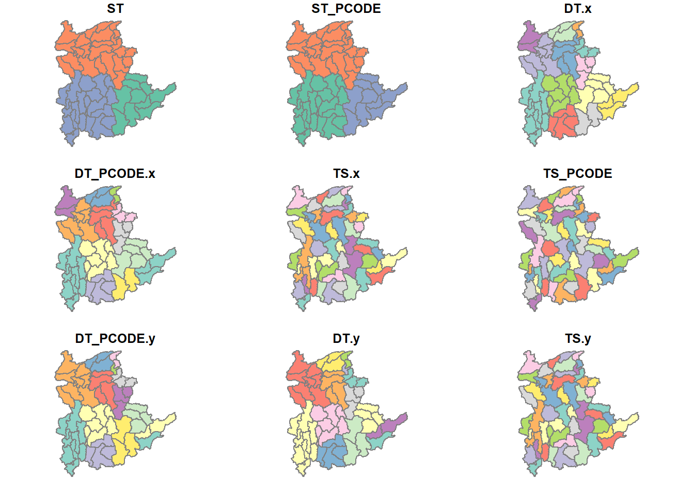

pacman::p_load(sp, spdep, tmap, sf, ClustGeo,
ggpubr, cluster, factoextra, NbClust,
heatmaply, corrplot, psych, tidyverse, GGally)In-class Exercise 7: Geographic Segmentation with Spatially Constrained Cluster Analysis: sfdep methods
Installing and loading R packages
Note
We remove rgdal because it is no longer in CRAN
Loading tidyverse allows us to use other packages such as ggplot, dplyr, tidyr
Data import and preparation
We will be using 2 datasets in this exercise:
Myanmar Township Boundary Data (geometric file)
Shan-ICT.csv (attribute file)
shan_sf <- st_read(dsn = "data/geospatial",
layer = "myanmar_township_boundaries") %>%
filter(ST %in% c("Shan (East)", "Shan (North)", "Shan (South)")) %>%
select(c(2:7))Filter: To only include Shan states
Select: To select only relevant fields
Note: Geodetic CRS: WGS 84, we do not have to be particular about the projection here because we are building graphs
ict <- read_csv("data/aspatial/Shan-ICT.csv")summary(ict) District Pcode District Name Township Pcode Township Name
Length:55 Length:55 Length:55 Length:55
Class :character Class :character Class :character Class :character
Mode :character Mode :character Mode :character Mode :character
Total households Radio Television Land line phone
Min. : 3318 Min. : 115 Min. : 728 Min. : 20.0
1st Qu.: 8711 1st Qu.: 1260 1st Qu.: 3744 1st Qu.: 266.5
Median :13685 Median : 2497 Median : 6117 Median : 695.0
Mean :18369 Mean : 4487 Mean :10183 Mean : 929.9
3rd Qu.:23471 3rd Qu.: 6192 3rd Qu.:13906 3rd Qu.:1082.5
Max. :82604 Max. :30176 Max. :62388 Max. :6736.0
Mobile phone Computer Internet at home
Min. : 150 Min. : 20.0 Min. : 8.0
1st Qu.: 2037 1st Qu.: 121.0 1st Qu.: 88.0
Median : 3559 Median : 244.0 Median : 316.0
Mean : 6470 Mean : 575.5 Mean : 760.2
3rd Qu.: 7177 3rd Qu.: 507.0 3rd Qu.: 630.5
Max. :48461 Max. :6705.0 Max. :9746.0 Notice that the range of each variable varies. We need to perform standardisation.
ict_derived <- ict %>%
mutate(`RADIO_PR` = `Radio`/`Total households`*1000,
`TV_PR` = `Television`/`Total households`*1000,
`LLPHONE_PR` = `Land line phone`/`Total households`*1000,
`MPHONE_PR` = `Mobile phone`/`Total households`*1000,
`COMPUTER_PR` = `Computer`/`Total households`*1000,
`INTERNET_PR` = `Internet at home`/`Total households`*1000) %>%
rename(`DT_PCODE` =`District Pcode`,`DT`=`District Name`,
`TS_PCODE`=`Township Pcode`, `TS`=`Township Name`,
`TT_HOUSEHOLDS`=`Total households`,
`RADIO`=`Radio`, `TV`=`Television`,
`LLPHONE`=`Land line phone`, `MPHONE`=`Mobile phone`,
`COMPUTER`=`Computer`, `INTERNET`=`Internet at home`) Preparing the data for choropleth map
shan_sf <- left_join(shan_sf,
ict_derived, by=c("TS_PCODE"="TS_PCODE"))
write_rds(shan_sf, "data/rds/shan_sf.rds")
Note
If we want the output to be a sf data frame, the first argument should be a sf data frame.
If we use st_join(), but arguments must be sf data frames.
Reading in data from rds
shan_sf <- read_rds("data/rds/shan_sf.rds")Plotting Multiple Histograms
radio <- ggplot(data=ict_derived,
aes(x= `RADIO_PR`)) +
geom_histogram(bins=20,
color="black",
fill="light blue")
tv <- ggplot(data=ict_derived,
aes(x= `TV_PR`)) +
geom_histogram(bins=20,
color="black",
fill="light blue")
llphone <- ggplot(data=ict_derived,
aes(x= `LLPHONE_PR`)) +
geom_histogram(bins=20,
color="black",
fill="light blue")
mphone <- ggplot(data=ict_derived,
aes(x= `MPHONE_PR`)) +
geom_histogram(bins=20,
color="black",
fill="light blue")
computer <- ggplot(data=ict_derived,
aes(x= `COMPUTER_PR`)) +
geom_histogram(bins=20,
color="black",
fill="light blue")
internet <- ggplot(data=ict_derived,
aes(x= `INTERNET_PR`)) +
geom_histogram(bins=20,
color="black",
fill="light blue")
ggarrange(radio, tv, llphone, mphone, computer, internet,
ncol = 3,
nrow = 2)
Correlation Analysis
To check if the input variables are highly correlated.
cluster_vars.cor = cor(ict_derived[,12:17])
corrplot.mixed(cluster_vars.cor,
lower = "ellipse",
upper = "number",
tl.pos = "lt",
diag = "l",
tl.col = "black")
Interpreting the corrplot
- Size of Ellipse
- Narrow means highly correlated
- Color
- Red denotes negative correlation
- Blue denotes positive correlation
Extracting clustering variables
cluster_vars <- shan_sf %>%
st_set_geometry(NULL) %>%
select("TS.x", "RADIO_PR", "TV_PR", "LLPHONE_PR", "MPHONE_PR", "COMPUTER_PR")
head(cluster_vars,10) TS.x RADIO_PR TV_PR LLPHONE_PR MPHONE_PR COMPUTER_PR
1 Mongmit 286.1852 554.1313 35.30618 260.6944 12.15939
2 Pindaya 417.4647 505.1300 19.83584 162.3917 12.88190
3 Ywangan 484.5215 260.5734 11.93591 120.2856 4.41465
4 Pinlaung 231.6499 541.7189 28.54454 249.4903 13.76255
5 Mabein 449.4903 708.6423 72.75255 392.6089 16.45042
6 Kalaw 280.7624 611.6204 42.06478 408.7951 29.63160
7 Pekon 318.6118 535.8494 39.83270 214.8476 18.97032
8 Lawksawk 387.1017 630.0035 31.51366 320.5686 21.76677
9 Nawnghkio 349.3359 547.9456 38.44960 323.0201 15.76465
10 Kyaukme 210.9548 601.1773 39.58267 372.4930 30.94709st_set_geometry = dropping away the geometric columns
Note: even if you don’t select the geometry column, the geometry layer will still be read in
The current row names in cluster_vars are labelled as 1, 2, 3 … We need to set the row names as the township name using row.names() function.
row.names(cluster_vars) <- cluster_vars$"TS.x"
head(cluster_vars,10) TS.x RADIO_PR TV_PR LLPHONE_PR MPHONE_PR COMPUTER_PR
Mongmit Mongmit 286.1852 554.1313 35.30618 260.6944 12.15939
Pindaya Pindaya 417.4647 505.1300 19.83584 162.3917 12.88190
Ywangan Ywangan 484.5215 260.5734 11.93591 120.2856 4.41465
Pinlaung Pinlaung 231.6499 541.7189 28.54454 249.4903 13.76255
Mabein Mabein 449.4903 708.6423 72.75255 392.6089 16.45042
Kalaw Kalaw 280.7624 611.6204 42.06478 408.7951 29.63160
Pekon Pekon 318.6118 535.8494 39.83270 214.8476 18.97032
Lawksawk Lawksawk 387.1017 630.0035 31.51366 320.5686 21.76677
Nawnghkio Nawnghkio 349.3359 547.9456 38.44960 323.0201 15.76465
Kyaukme Kyaukme 210.9548 601.1773 39.58267 372.4930 30.94709Notice that the row number has been replaced into the township name.
shan_ict <- select(cluster_vars, c(2:6))
head(shan_ict, 10) RADIO_PR TV_PR LLPHONE_PR MPHONE_PR COMPUTER_PR
Mongmit 286.1852 554.1313 35.30618 260.6944 12.15939
Pindaya 417.4647 505.1300 19.83584 162.3917 12.88190
Ywangan 484.5215 260.5734 11.93591 120.2856 4.41465
Pinlaung 231.6499 541.7189 28.54454 249.4903 13.76255
Mabein 449.4903 708.6423 72.75255 392.6089 16.45042
Kalaw 280.7624 611.6204 42.06478 408.7951 29.63160
Pekon 318.6118 535.8494 39.83270 214.8476 18.97032
Lawksawk 387.1017 630.0035 31.51366 320.5686 21.76677
Nawnghkio 349.3359 547.9456 38.44960 323.0201 15.76465
Kyaukme 210.9548 601.1773 39.58267 372.4930 30.94709write_rds(shan_ict, "data/rds/shan_ict.rds")Computing the proximity matrix
shan_ict <- read_rds("data/rds/shan_ict.rds")
proxmat <- dist(shan_ict, method = 'euclidean')Interpreting dendrogram
Optimal number of clusters are based on local optimization
Computing hierarchical clustering
hclust_ward <- hclust(proxmat, method = 'ward.D')
plot(hclust_ward, cex = 0.6)
Notes:
as.factor = changing a data type from numerical data type into a factor data type
cbind() denotes column append: Used instead because there is no unique identifiers between
shan_sfandgroups.If the data has been sorted, we should not use cbind() because the sequence of data would have changed.
SKATER approach using sfdep
This code chunk below will be redundant when we are using sfdep
shan_sp <- as_Spatial(shan_sf)shan.nb <- poly2nb(shan_sf)
summary(shan.nb)Neighbour list object:
Number of regions: 55
Number of nonzero links: 264
Percentage nonzero weights: 8.727273
Average number of links: 4.8
Link number distribution:
2 3 4 5 6 7 8 9
5 9 7 21 4 3 5 1
5 least connected regions:
3 5 7 9 47 with 2 links
1 most connected region:
8 with 9 linksplot(shan_sf,
border=grey(.5))
plot(st_geometry(shan_sf),
border=grey(.5))
Note that if we are using spdep, we can use the coordinates() function. But if we are using sfdep, we need to derive the centroids of each polygon.
pts <- st_coordinates(st_centroid(shan_sf))
plot(st_geometry(shan_sf),
border=grey(.5))
plot(shan.nb,
pts,
col="blue",
add=TRUE)
Cluster analysis
Looking at the distribution of clusters based on map
Dissecting cluster membership (to label the clusters) (we need to characterize the clusters based on interpreting the parallel coordinates plots)